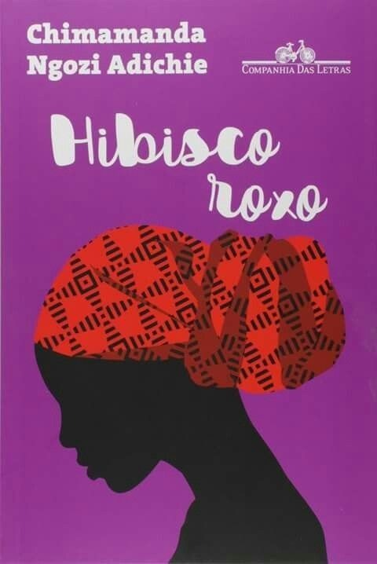

Contos
O que é um conto?
Os contos são narrativas curtas que apresentam uma história com poucos personagens, um número reduzido de acontecimentos e um tempo e espaço limitados. Mesmo sendo textos breves, eles conseguem transmitir mensagens importantes, despertar emoções e levar o leitor à reflexão por meio de conflitos, experiências e diferentes pontos de vista.
A importância dos contos está em incentivar o hábito da leitura, estimular a imaginação e a criatividade, além de desenvolver a interpretação de texto e o senso crítico.Por meio deles, é possível conhecer diferentes culturas, valores e realidades, compreendendo melhor as experiências humanas. Os contos também contribuem para o desenvolvimento da escrita e da capacidade de expressão, tornando-se uma importante forma de aprendizado e de valorização da literatura.
Nossos contos
Após a leitura e o estudo do livro Hibisco Roxo, da escritora Chimamanda Ngozi Adichie, desenvolvemos a produção dos nossos contos. A proposta foi criar um novo desfecho para a história, utilizando nossa criatividade e nossa interpretação sobre os acontecimentos do livro. Cada aluno escreveu um conto imaginando um final diferente, baseado em seu próprio ponto de vista e na forma como acreditava que a narrativa poderia ser concluída.
Durante esse processo, refletimos sobre as escolhas dos personagens, os conflitos apresentados na obra e as possíveis consequências de suas ações. A atividade incentivou a criatividade, a interpretação textual e a produção escrita, além de permitir que cada estudante expressasse sua visão sobre a história. Assim, nossos contos mostram diferentes possibilidades para o mesmo enredo, demonstrando como a literatura pode despertar diversas interpretações e estimular a imaginação.

Contos
Aqui estão os contos do nosso grupo!